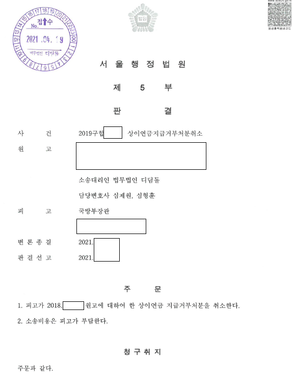

01사건 개요
1985년 군 복무 중 다쳐 이듬해 의병 전역한 의뢰인의 사건입니다. 소송 끝에 국가유공자로 인정됐고, 상이연금은 대법원 패소 뒤 헌법소원(헌법불합치)과 재심을 거쳐 이겼습니다. 그런데 국방부가 다시 신체검사를 받으라며 상이연금 지급을 또 거부했습니다.
02쟁점
- 재심에서 이긴 뒤에도 다시 신체검사를 요구하며 상이연금 지급을 거부한 처분이 적법한지
- 복무 중 부상과 현재 장애 상태의 관계를 어떻게 입증할지
03변호사가 한 일
- 상이연금 지급거부처분 취소소송을 맡아, 여러 차례의 감정을 거쳐 장애 상태를 입증했습니다.
- 1심에서 이긴 뒤 국방부가 항소하자 항소심까지 직접 수행했습니다.
04결과
1심에서 상이연금 지급거부처분을 취소하는 판결이 선고됐고, 국방부의 항소가 기각돼 판결이 확정됐습니다.

이 사례는 원문을 요약해 정리한 것입니다. 사건 경과와 판결문 등 전체 내용은 로톡에 게시된 원문에서 볼 수 있습니다.
로톡에서 전문 보기 →05비슷한 상황이라면
국가유공자 인정과 상이연금은 요건이 달라, 한쪽이 인정돼도 다른 쪽은 거부될 수 있습니다. 거부처분을 받았다면 거부 이유를 확인하고, 진료기록과 신체검사 자료를 정리해 두세요.
국가유공자로 인정받으면 상이연금도 받을 수 있나요?
반드시 그렇지는 않습니다. 둘은 요건과 판단 기관이 달라 국가유공자로 인정돼도 상이연금이 거부될 수 있습니다. 국가유공자 인정 뒤 상이연금이 거부돼 소송으로 거부처분을 취소한 사례가 있습니다.
오래전 군 복무 중 다친 것도 상이연금을 다툴 수 있나요?
시간이 오래 지났더라도 다툴 여지가 있습니다. 1985년 복무 중 부상에 대해 30년 넘게 지나 상이연금 지급거부처분이 취소되고 항소심에서도 유지된 사례가 있습니다.
군 복무 중 생긴 병으로 상이연금이 거부됐습니다.
공무와 질병 사이의 인과관계를 구체적으로 다퉈야 합니다. 옛 부대 건물 공사 중 석면에 노출돼 폐암이 생긴 군인이 1심 패소 뒤 항소심에서 상이연금 거부처분 취소 판결을 받은 사례가 있습니다.
평일 09:00–18:00 변호사가 직접 전화를 받습니다.
재판으로 자리에 없는 경우 로톡으로 상담을 신청하시거나 이메일로 문의해 주세요.
의뢰인이 특정되지 않도록 사실관계를 일부 줄이거나 바꾸어 정리했습니다. 사건의 결과는 구체적인 사실관계와 증거에 따라 달라질 수 있으며, 같은 결과를 보장하지 않습니다.